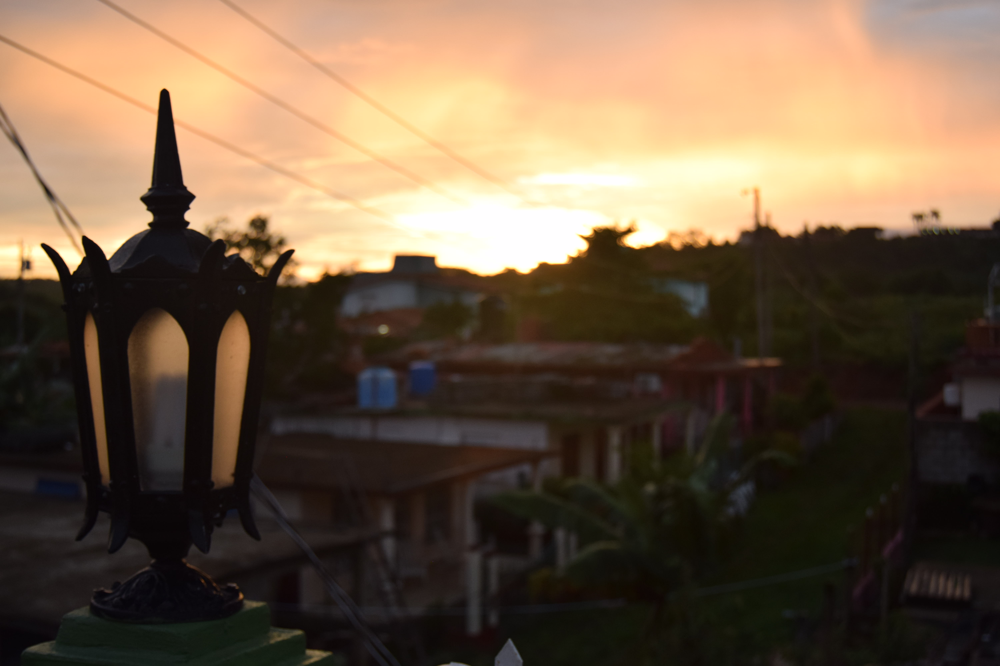

prev
project name
The photography is one of my hobbies. I have a Nikon D3300 with a 18-55mm objective for the everyday photography. A objective with fix focal distance of 55mm, perfect for portraits and for take pictures with selective focus.


Spain
There are an amount of photos taken in my travels arround my country. With my photos I try to capture the beauty of the landscapes and countries.
Cities visited:
Asturias




Cuba
This was my first lon trip and the first time that I cross the ocean. Was a great experience with full of histories.
Cities visited:
Viñales, Varadero, La Havanna, Trinidad